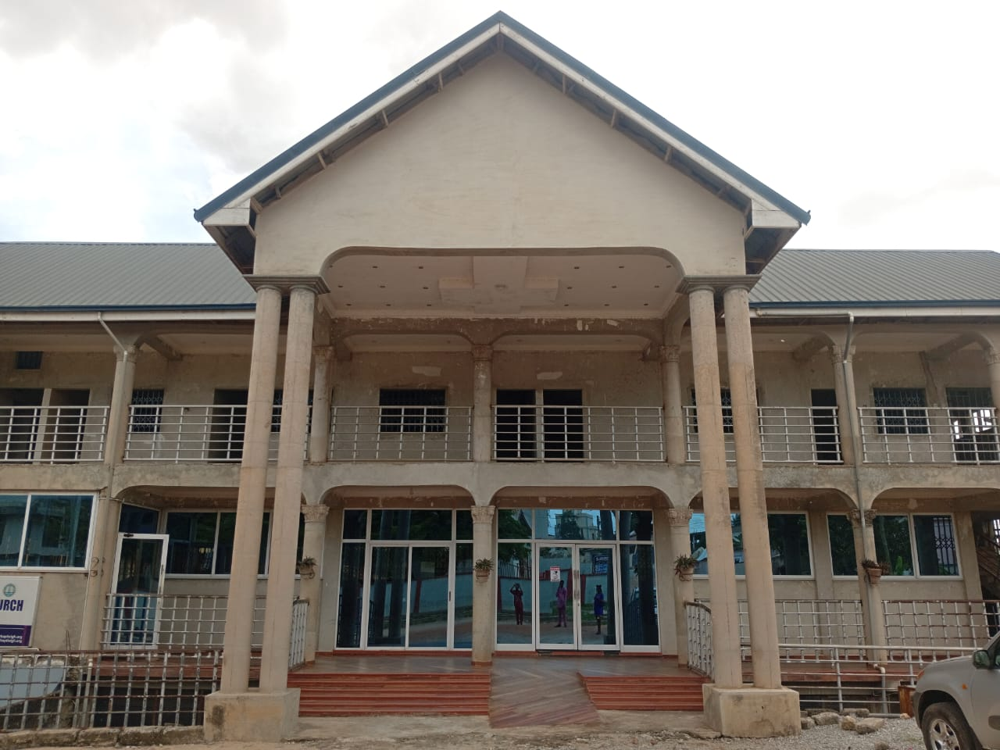

Featured This Week

The Power of Prayer
Discover how a life of prayer unlocks the supernatural and transforms every area of your walk with God. A timely word for every believer.
Watch on FacebookAll Sermons — Recent to Past
Auto-updated live from our Facebook page. New sermons appear here as soon as they're posted.
Latest Sermon Videos
Live & Recent Posts
Browse By Topic
Prayer
The Power of Prayer
A soul-lifting sermon on how prayer brings transformation in every season of life.

Worship
A Heart of Worship
Worship is more than a song — it's a lifestyle of surrender. Discover what it means to truly worship in spirit and truth.

Faith
Mountain-Moving Faith
Even faith the size of a mustard seed can move mountains. A powerful word on activating your faith.